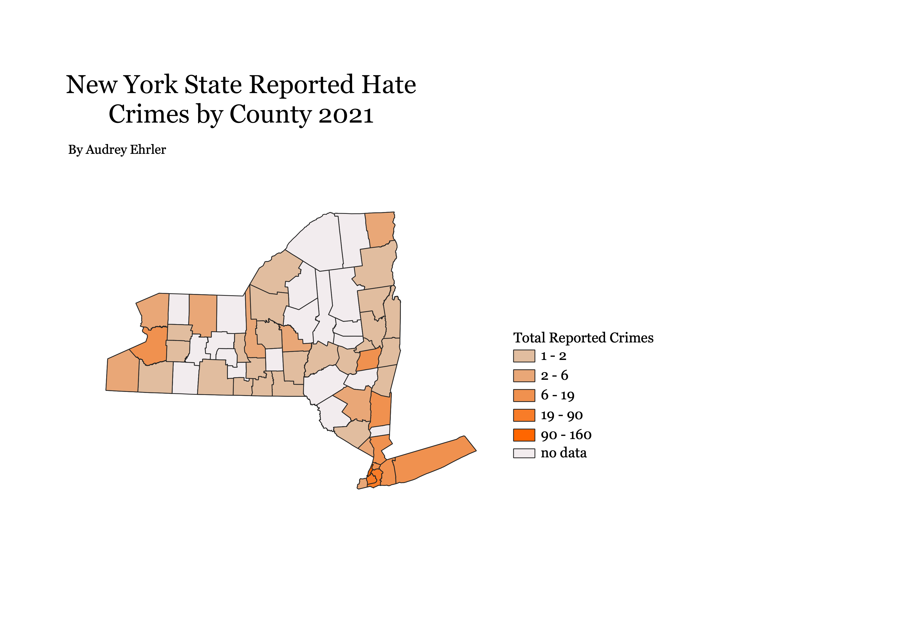

NY Hate Crimes by County Chloropleth
This is data on 2021 hate crimes in New York by county. These are only reported crimes,
and do not include unreported crimes that likely occur. Additionally, many counties do not have
data, which is something to keep in mind. This data is from Data.gov, which also included
data on the crime type, both whether it was against property or persons and also the specific identity
the crime was against. I chose this topic because the data set was easy to work with and also is a concern of mine,
and may be useful to see how reported hate crimes may not be a very accurate way of looking at the data for this topic.

Data Used
Illinois Shapefile
CSV Data